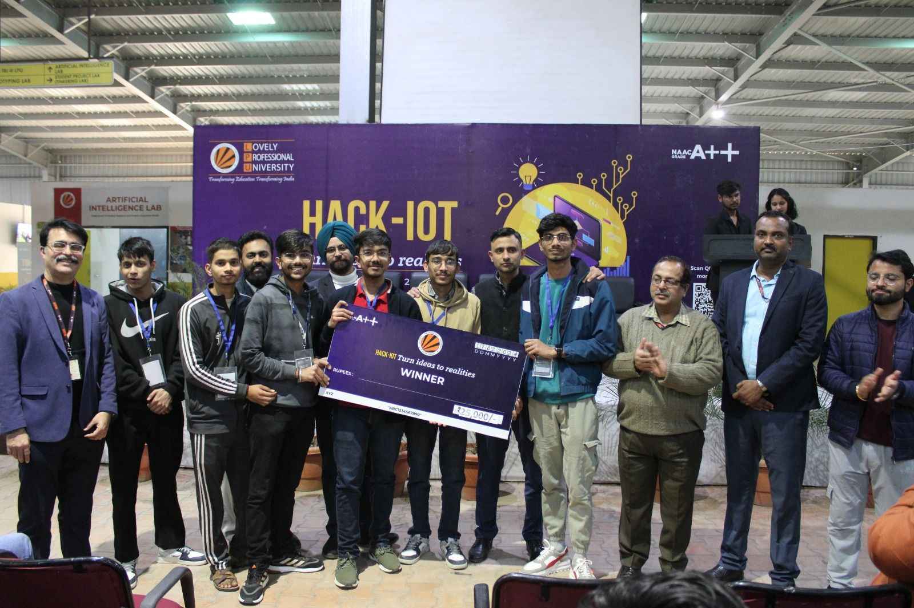
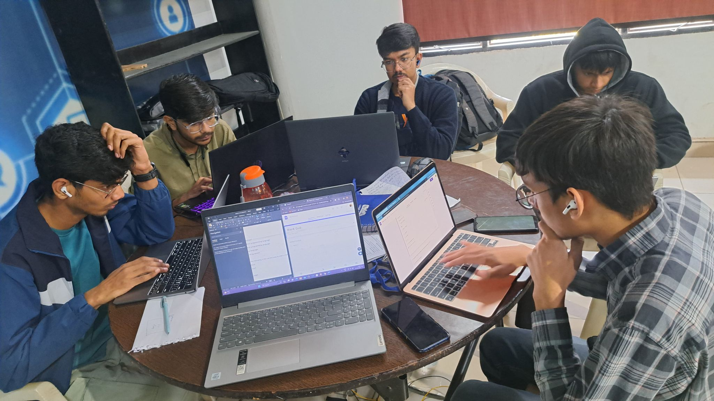

Aspiring Data Analyst | Business Intelligence | SQL & Python
I transform raw data into strategic business decisions. Specializing in predictive analytics, interactive dashboards, and end-to-end ML pipelines that drive measurable organizational impact.
B.Tech CSE student with hands-on experience in statistical analysis, machine learning, and business reporting — focused on translating complex datasets into clear, actionable insights.
Every analysis begins with a business question. I structure investigations around organizational KPIs, ensuring outputs directly support strategic decisions rather than surface-level reporting.
I approach data problems with hypothesis-driven workflows — validating assumptions through statistical testing, iterative modeling, and rigorous evaluation before recommending action.
From scoping the problem to delivering insights, I follow systematic pipelines — data cleaning, exploratory analysis, feature engineering, modeling, and visualization — so results are reproducible and scalable.
Technical depth means little without clarity. I translate analytical outputs into business language through dashboards, concise reports, and narrative-driven presentations tailored to each audience.
A comprehensive overview of my technical capabilities and tools used for data analysis and development.
My track record of applying data-driven solutions to real-world business challenges.
Lovely Professional University, Phagwara (Freelance)
End-to-end analytical projects demonstrating business problem solving, ML model deployment, and data-driven insight generation.
Organizations lose significant revenue to unplanned employee turnover. HR teams lacked a data-driven mechanism to proactively identify at-risk employees before attrition occurred.
Customer churn directly impacts revenue and growth. The business needed a predictive model to identify high-risk customers before disengagement, enabling targeted retention campaigns.
Personal finance tracking tools are often overcomplicated. This project delivers a lightweight, database-backed CLI system for expense management, budgeting, and category-level analytics.
Existing educational platforms suffer from slow page loads and poor adaptive experiences. This project engineered a high-performance e-learning platform delivering personalized learning pathways.
Milestones and awards that validate my technical problem-solving capabilities.

Lovely Professional University • Feb 2024
Secured 1st position among 450+ participating teams for developing an innovative EdTech solution (EDU_HUB) with an adaptive learning architecture.

Coding Ninjas LPU • Jun 2024
Achieved Top-5 rank among 750+ participants in the intensive Tech Blitz Hackathon.
My foundational learnings and ongoing academics.
Phagwara, Punjab
Bachelor of Technology — Computer Science and Engineering
CGPA: 7.04
Parbhani, Maharashtra
Intermediate
Percentage: 88.00%
Parbhani, Maharashtra
Matriculation
Percentage: 90.20%
Reach out for opportunities, collaboration, or just to say hello.